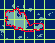

|  | A "clickable" map of PUMA sites will allow you to view the sites distribution in and around the West Midlands County. |
| Data source |
Site name |
Longitude (degrees) |
Latitude (degrees) |
|---|---|---|---|
| PUMA | Belbroughton | -2.148 | 52.398 |
| Dodford | -2.104 | 52.363 | |
| Fradley Park | -1.788 | 52.722 | |
| Frankley Reservoir | -1.997 | 52.417 | |
| Frolesworth | -1.244 | 52.499 | |
| Greensforge | -2.218 | 52.499 | |
| Halfpenny Green Airport | -2.261 | 52.514 | |
| Kidderminster | -2.258 | 52.364 | |
| Loughton | -2.563 | 52.443 | |
| Meon Hill | -1.736 | 52.098 | |
| Moreton Morrell | -1.550 | 52.206 | |
| Pritchatts Road | -1.933 | 52.456 | |
| Solihull | -1.772 | 52.406 | |
| Stretton-on-Dunsmore | -1.386 | 52.350 | |
| Tamworth | -1.722 | 52.531 | |
| Turner's Hill | -2.044 | 52.492 | |
| Wenlock | -2.768 | 52.482 | |
| Withybrook Equestrian Centre | -1.343 | 52.463 | |
| AUN | Birmingham Centre | -1.906 | 52.479 |
| Birmingham East | -1.830 | 52.497 | |
| Coventry | -1.517 | 52.400 | |
| Walsall Alumwell | -2.009 | 52.581 | |
| Willenhall | -2.032 | 52.608 | |
| Wolverhampton | -2.117 | 52.583 | |
| AUN + LA | West Bromwich | -1.996 | 52.521 |
| LA | Birmingham West | -1.953 | 52.503 |
| Fir Tree Drive | -1.965 | 52.558 | |
| Fox Hollies Road | -1.828 | 52.437 | |
| Hodge Hill | -1.814 | 52.507 | |
| Rowley Regis | -2.040 | 52.494 | |
| Springfield | -2.055 | 52.489 |
|
| Go to URGENT Sites Index. |